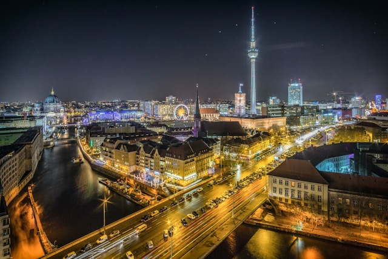
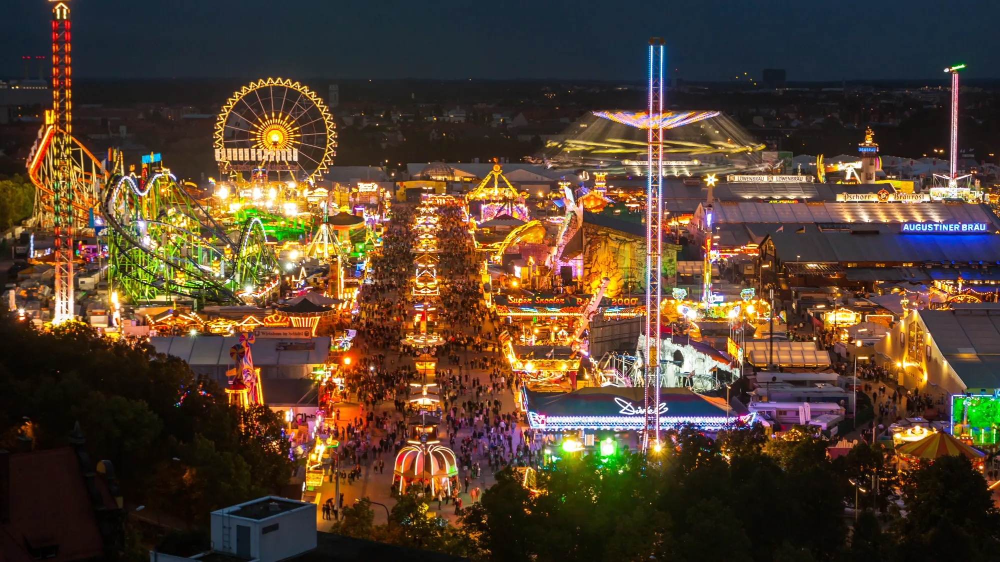
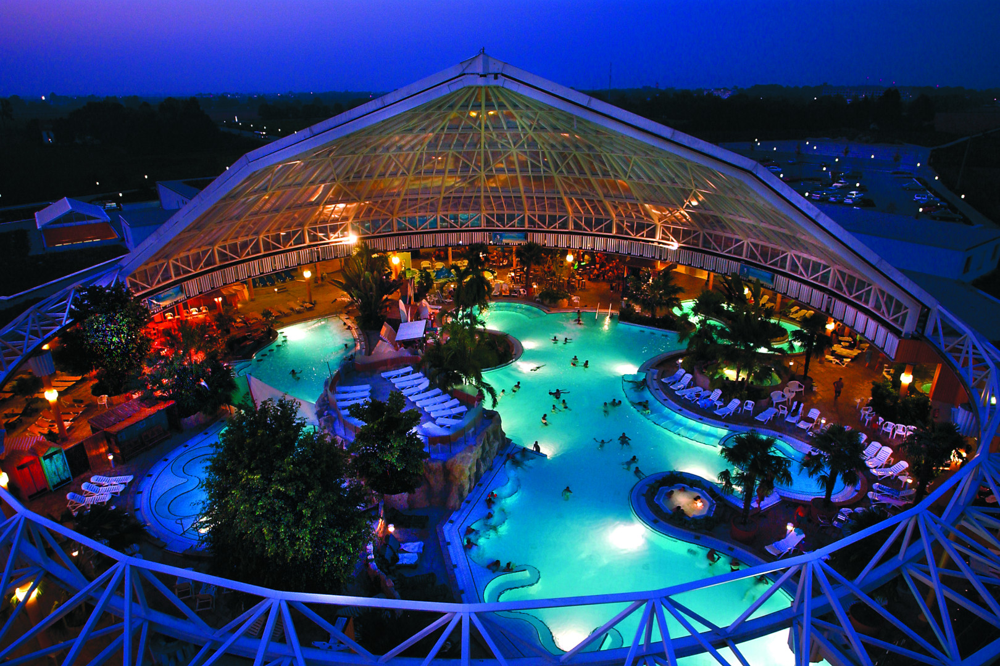
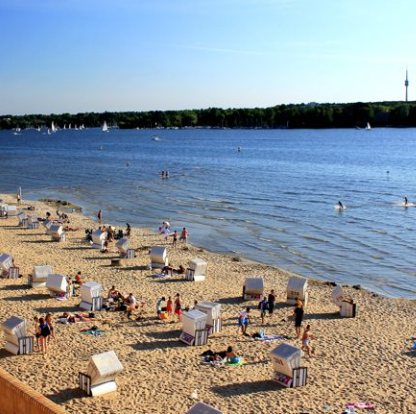

As the summer sun begins to fade, Germany transforms into a kaleidoscope of golden shades, crimson leaves, and a cozy atmosphere. Autumn in Germany is a truly magical experience, offering a unique blend of natural beauty, cultural richness, and festive cheer. Autumn here is not just a season; it's an experience that captivates the senses and warms the soul.From the picturesque Alps to the scenic Rhine Valley, the country's diverse landscapes take on a new dimension, inviting visitors to explore, discover, and indulge.
Whether you're a nature enthusiast, a foodie, or a history buff, Germany's autumn season has something for everyone. Join us as we embark on a journey through the best of Germany's autumnal delights, from Oktoberfest's lively beer tents to the tranquil beauty of the Black Forest, and from harvest festivals (celebrating the bounty of the land, offering markets brimming with fresh produce, parades, and tastings of apples, pumpkins, and wine) to world-class museums, castles, and cultural sites, which are less crowded and offer a more intimate experience.. Get ready to immerse yourself in the warmth and wonder of Germany's most charming season.
The mild autumn weather is perfect for outdoor adventures, whether it's hiking through the forest, cycling along scenic routes, or simply enjoying a leisurely stroll through historic towns. Culinary delights abound, with seasonal dishes that showcase the rich flavors of autumn. Think hearty stews, succulent game meats, and pastries filled with fresh apples and plums. Each bite is a testament to the season's bounty and the country's culinary heritage. In essence, autumn in Germany is a symphony of natural beauty, cultural richness, and festive cheer, making it a truly magical time to visit.
Have you had the chance to experience this enchanting season in Germany? If not, Germany's autumn season offers countless opportunities for exploration and enjoyment. Here are some of the top experiences to add to your itinerary:
The Festival of Lights in Berlin is a spectacular annual event that transforms the city into a dazzling display of light and art. Held every October, this festival illuminates Berlin's most iconic landmarks, buildings, and public spaces with stunning light installations, projections, and video art. Each year, artists from around the world create breathtaking displays that tell stories, highlight cultural themes, and celebrate the city's rich history and vibrant present.
During the festival, Berlin becomes a glowing stage where monuments like the Brandenburg Gate, Berlin Cathedral, and the TV Tower are bathed in colorful lights, creating a magical atmosphere that captivates both locals and visitors. The event also features guided tours, light art installations, and various performances, making it a multifaceted celebration of creativity and innovation. Each evening, from 7:00 PM to 11:00 PM, the city will be illuminated with stunning light installations and projections, creating a magical atmosphere.
The 2024 edition of the Festival of Lights will take place from October 4th to 13th and this year's edition will be particularly special as it marks the 20th anniversary of the event. This year's theme, “Celebrating Freedom,” will commemorate 35 years since the fall of the Berlin Wall, with spectacular light art that reflects the spirit of freedom and unity. Highlights include a unique musical and visual experience by Paul van Dyk at the Berlin Cathedral, promising an unforgettable experience for all attendees. ☝
Oktoberfest is the world’s largest beer festival, held annually in Munich, Germany, from late September to early October. It’s a lively celebration of Bavarian culture, attracting millions of visitors who gather to enjoy traditional German music, food, and, of course, beer. The festival grounds are filled with large beer tents, each offering a unique atmosphere, with long wooden tables where people drink, sing, and dance. Visitors also enjoy amusement rides, parades, and wearing traditional Bavarian outfits like lederhosen and dirndls. The vibe is festive, communal, and unforgettable! Here is the link to the official site
The Erdinger Therme (Therme Erding) is one of the largest and most popular thermal spa resorts in Europe, located in Erding, a town in Bavaria, Germany, not far from Munich. It’s a tropical-themed water park and wellness retreat, offering a wide variety of attractions suitable for all ages. the Erdinger Therme is an oasis of relaxation, fun, and wellness that blends the best of tropical getaways with the health benefits of natural thermal waters, making it a must-visit destination for those in Bavaria looking to unwind or have a fun day out.
The Wannsee in Berlin is one of the city’s most beautiful and serene destinations. This large lake is a popular spot for swimming, sunbathing, and picnicking. Surrounded by lush forests and sandy beaches, it offers a peaceful escape from the hustle and bustle of the city.
As the autumn leaves fall and the days grow shorter, Germany's charm only deepens. Whether you're wandering through the colorful forests, savoring the season's harvest, or immersing yourself in the cultural festivities, there's no shortage of ways to enjoy this beautiful time of year. Embrace the crisp air and vibrant landscapes, and let the magic of autumn in Germany inspire you. So, pack your bags, put on your favorite sweater, and get ready to explore all that Germany has to offer this autumn.
The WebDev Insights Team
About Us